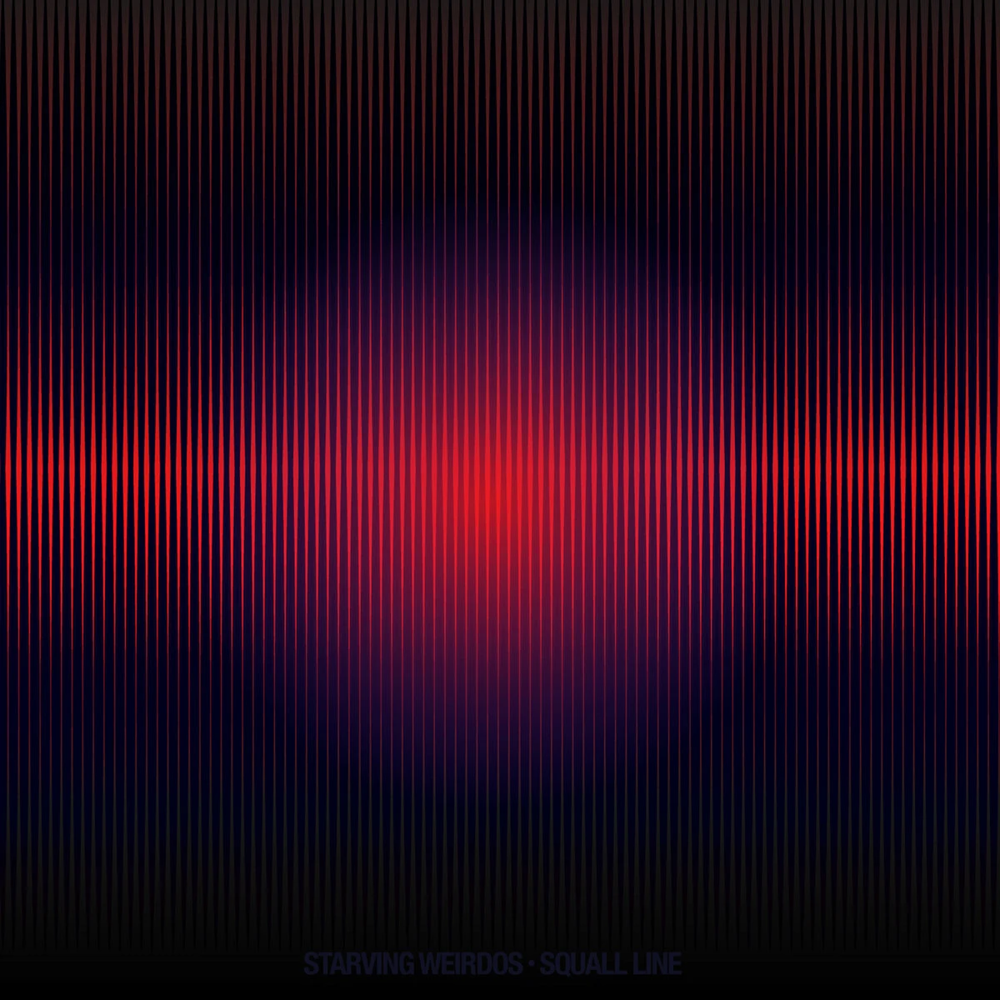
01 / LISTEN ↗地下发行 / BANDCAMP
Squall Line
Starving Weirdos
Drone / Experimental / Ambient
发行页介绍 · 中文简述厂牌介绍以人声、小提琴、长笛与合成器、效果器和田野录音交织。Brian Pyle 与 Merrick McKinlay 的双人声音实践，是从地下电子走向电声与长音的一条入口。
BANDCAMP / 专辑介绍与试听 ↗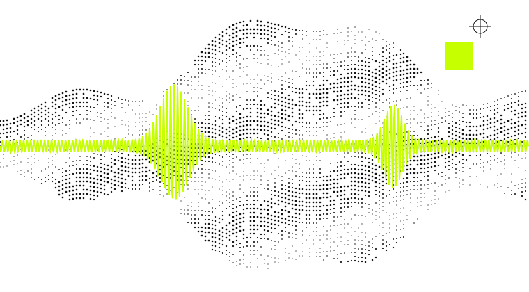
本期按阅读时间排列。先从小众厂牌、独立发行和乐评线索发现唱片，再回到 Bandcamp 阅读作者介绍、试听和支持音乐人。技术、深读与个人网站栏目继续保留。

01 / LISTEN ↗发行页介绍 · 中文简述厂牌介绍以人声、小提琴、长笛与合成器、效果器和田野录音交织。Brian Pyle 与 Merrick McKinlay 的双人声音实践，是从地下电子走向电声与长音的一条入口。
BANDCAMP / 专辑介绍与试听 ↗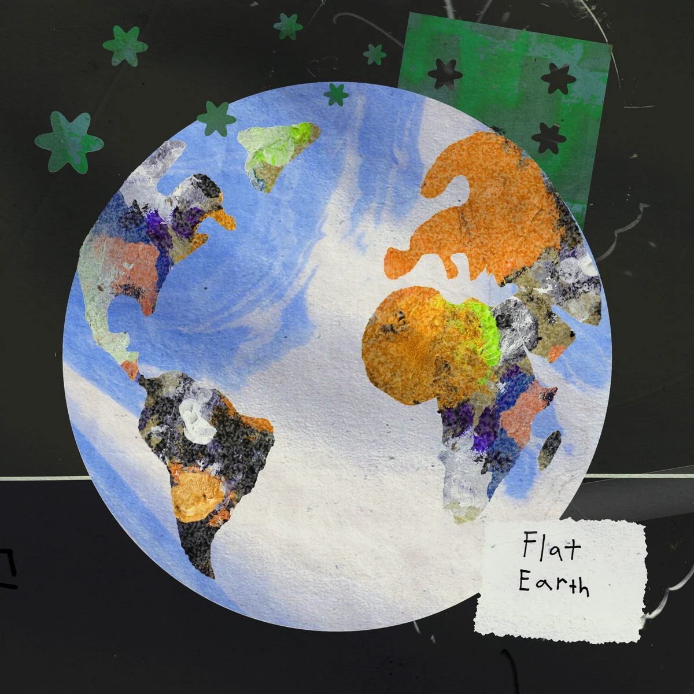
02 / LISTEN ↗发行页介绍 · 中文简述作者用 Orbit FM 颗粒采样软件制作：样本在界面里成为“行星”，用接触触发声音片段。发行页说明声音与图像由人制作，软件由人指导、代码工具辅助完成。
BANDCAMP / 专辑介绍与试听 ↗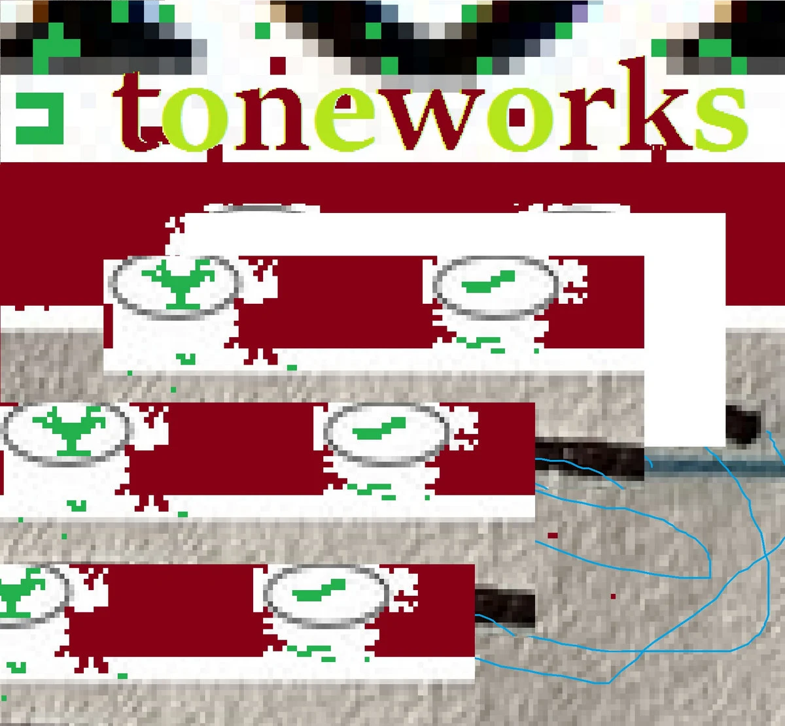
03 / LISTEN ↗发行页介绍 · 中文简述发行页未填写独立的 About 长介绍。保留原始曲目与试听入口，让作品本身说话；不把编辑的风格判断冒充作者自述。
BANDCAMP / 专辑介绍与试听 ↗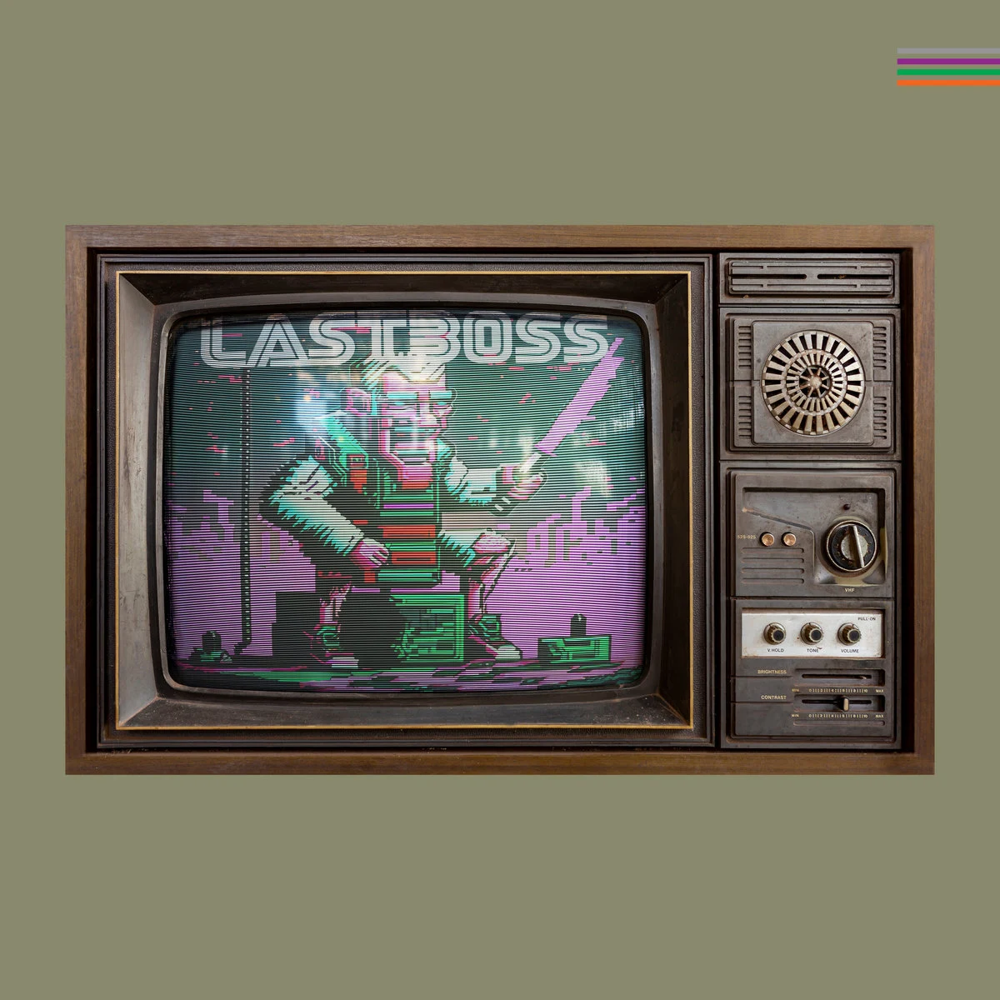
04 / LISTEN ↗发行页介绍 · 中文简述厂牌将作品置于 Breakcore、IDM、Drum & Bass、环境声与噪声的交汇处，着重描述断裂节奏、细小结构和紧张的氛围层。
BANDCAMP / 专辑介绍与试听 ↗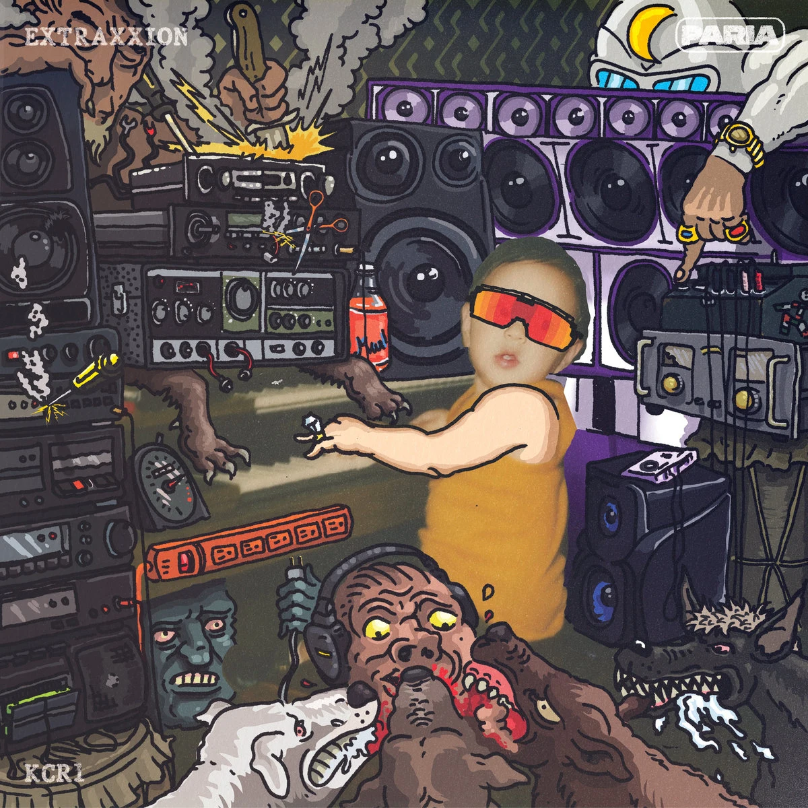
05 / LISTEN ↗发行页介绍 · 中文简述委内瑞拉音乐人 Magú 的 KCR1 首张个人专辑；发行文案把舞动、愤怒、节奏与记忆并置。可以沿他的多项目背景继续寻找拉丁美洲地下声音。
BANDCAMP / 专辑介绍与试听 ↗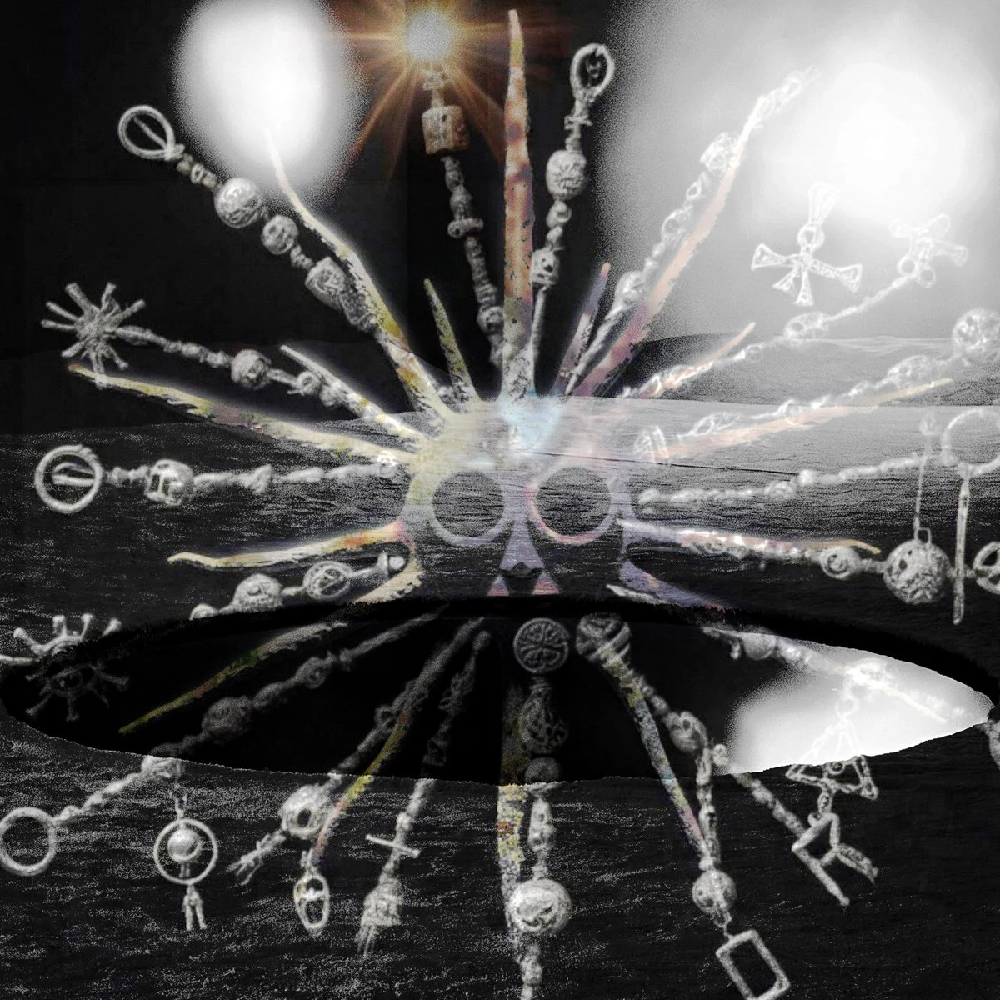
06 / LISTEN ↗发行页介绍 · 中文简述Ruhta 以新身份发布的七曲首专，发行介绍列出 Leftfield Bass、解构俱乐部与 Dub，并结合说唱和 Post-Trap；主题围绕节奏、恍惚与意识状态。
BANDCAMP / 专辑介绍与试听 ↗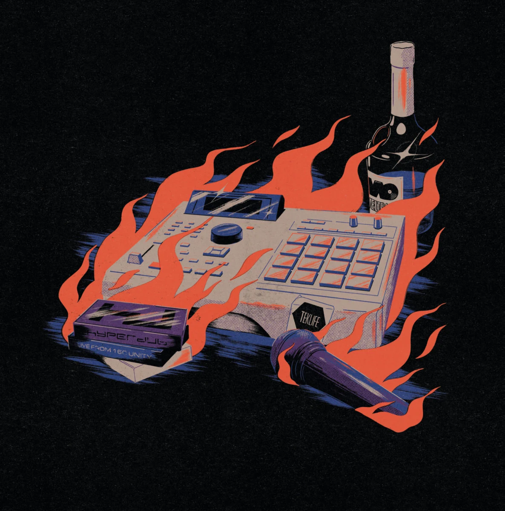
07 / LISTEN ↗发行页介绍 · 中文简述厂牌将 17 首芝加哥 Footwork 与高速俱乐部曲目首次压制成黑胶。发行页特别注明仅售黑胶、没有数字下载，购买前请确认格式；此处不是数字专辑下载推荐。
BANDCAMP / 专辑介绍与试听 ↗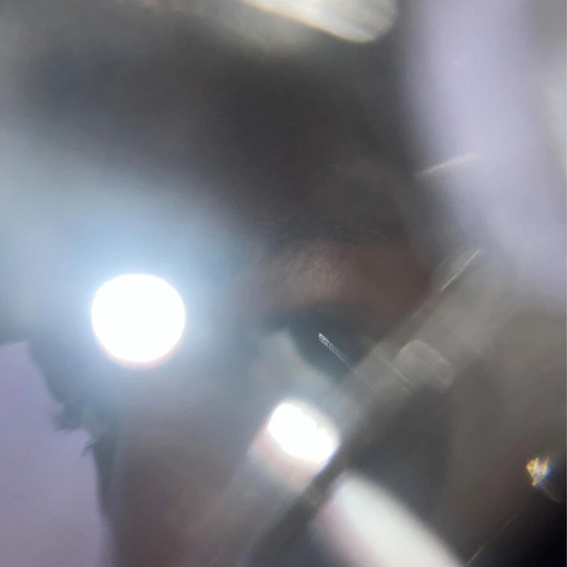
08 / LISTEN ↗发行页介绍 · 中文简述发行页列出多位合作音乐人的吉他、萨克斯、和声与部分制作贡献，是理解这张电子拼贴作品的具体入口。由 Pitchfork / Fantano 乐评发现，再回到作者页面听完整作品。
BANDCAMP / 专辑介绍与试听 ↗发现来源 ↗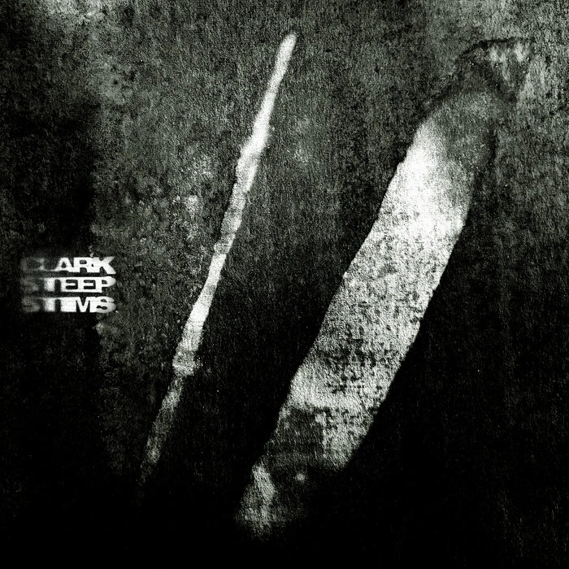
09 / LISTEN ↗发行页介绍 · 中文简述Bandcamp 介绍将 Modal、Opponent 与 Entity Stims 系列重新汇入本专辑，包含改写的动机、现场即兴和档案材料；Access Virus 合成器也是这一阶段的制作线索。
BANDCAMP / 专辑介绍与试听 ↗发现来源 ↗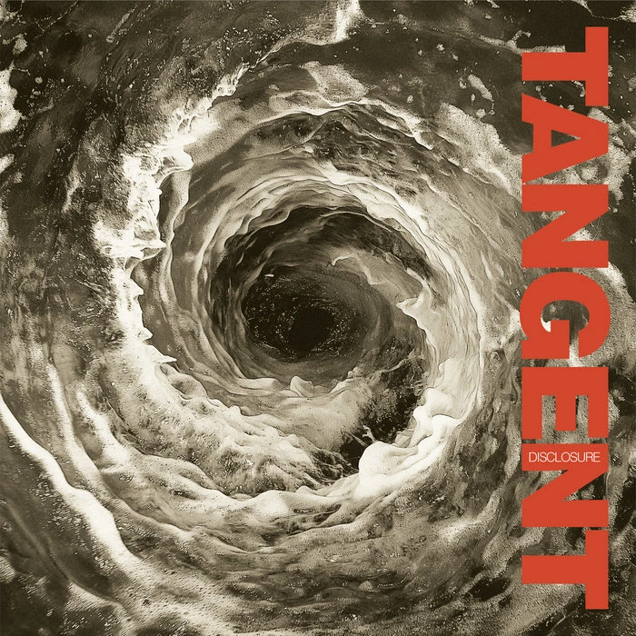
10 / LISTEN ↗发行页介绍 · 中文简述Tangent 在三年间歇后回归：发行介绍强调模块合成、模拟质感、温暖而有触感的声部，与其一贯阴影感的合成器空间和精细 IDM 节奏结合。
BANDCAMP / 专辑介绍与试听 ↗发现来源 ↗发行页介绍为中文简述，未完整试听的作品不虚构听感。没有单独介绍的发行页会明确说明。专辑与来源记录 ↗
近期动态；文章发布日期与项目背景分开呈现。
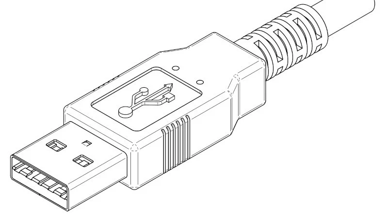
usb-rea 通过 usbmon 记录数据包，并允许给“调亮度”等动作添加标记，再生成分析报告。重点是操作与数据帧的对应关系。
READ SOURCE ↗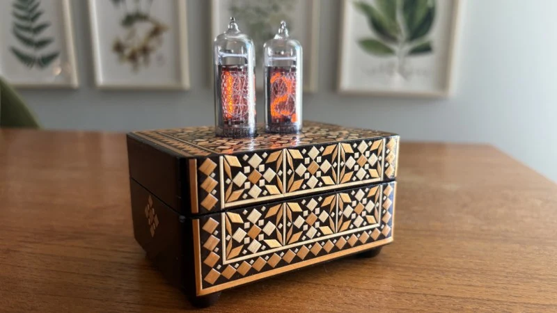
修改两位数码管时钟的 STM8 固件，通过串口连接 Raspberry Pi Zero，后者读取公交 API，再把剩余分钟数送回显示板。
READ SOURCE ↗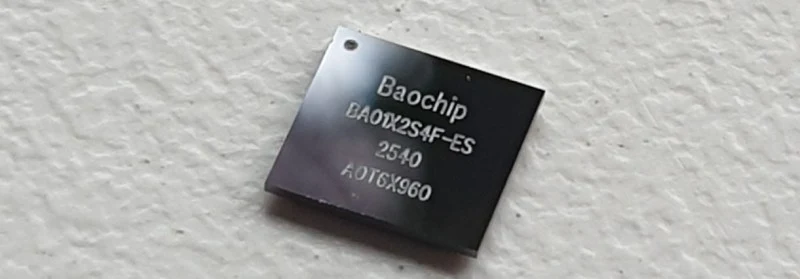
报道介绍 350 MHz VexRISC-V、4 MB RRAM、2 MB SRAM 与开放硬件设计资料；需区分“部分开放”与完全开源芯片。
READ SOURCE ↗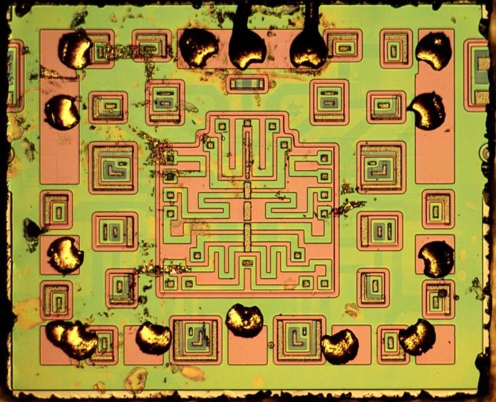
Ken Shirriff 拆解 Signetics ST680a 四 NAND 门芯片。可对照二极管—晶体管逻辑与后来的 TTL 实现。
READ SOURCE ↗以下为长期值得阅读的项目，不是今天发布的新闻。
cnlohr 的 rv003usb 在 CH32V003 上以汇编中断处理和 C 协议代码实现低速 USB 设备。官方仓库给出 HID、Gamepad、MIDI 等演示，也说明了不完整功能。
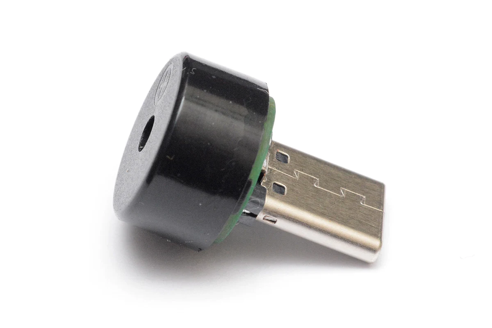
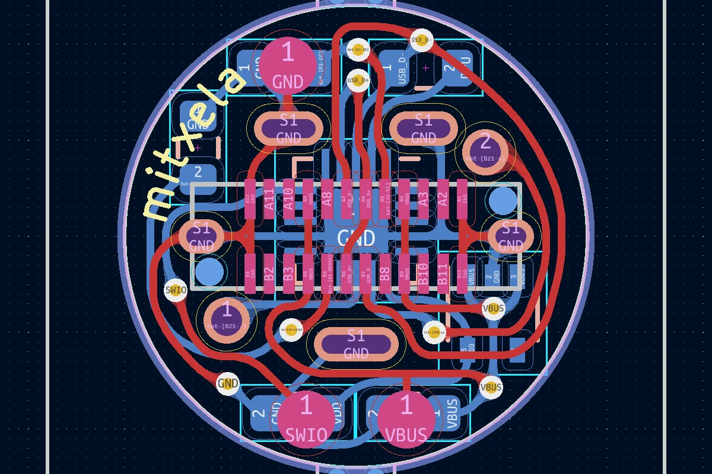
Ken Shirriff 对 Signetics ST680a 四 NAND 门芯片进行显微分析。与现代 CMOS 标准单元不同，早期 DTL 逻辑可通过二极管输入网络和晶体管反相级解释。
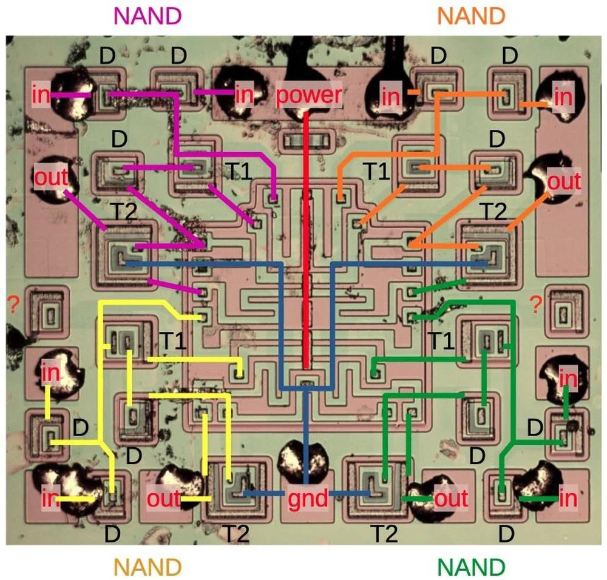
DTL 的输入二极管如何完成逻辑组合；晶体管如何承担反相与输出驱动；塑料 DIP 封装为何提高了开封和显微检查难度。
作者网站与长期资料库。